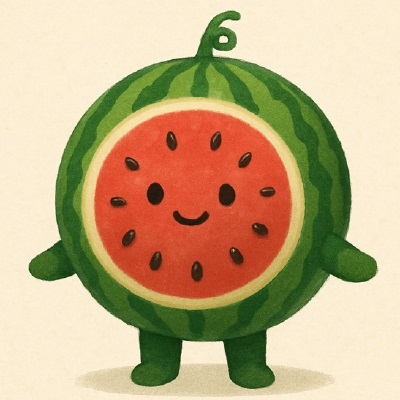

03.
GitHub Activity
코드로 기록하는 나의 성장 과정

데이터를 통해 가치를 만들어냅니다
XGBoost, Random Forest 등 다양한 알고리즘을 활용해 예측 모델을 구축합니다.
복잡한 데이터를 분석하고 시각화하여 인사이트를 도출합니다.
CNN, ResNet을 활용한 이미지 분류와 Grad-CAM 시각화를 구현합니다.
다양한 기술을 활용하여 문제를 해결합니다
코드로 기록하는 나의 성장 과정
머신러닝과 딥러닝으로 실제 문제를 해결합니다
전체적인 시스템 개발 경험을 소개합니다
Full-Stack 프로젝트가 곧 추가됩니다!